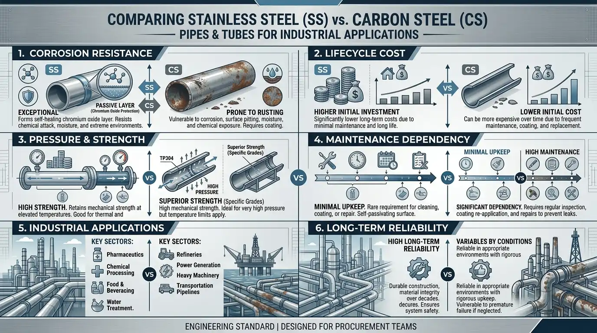
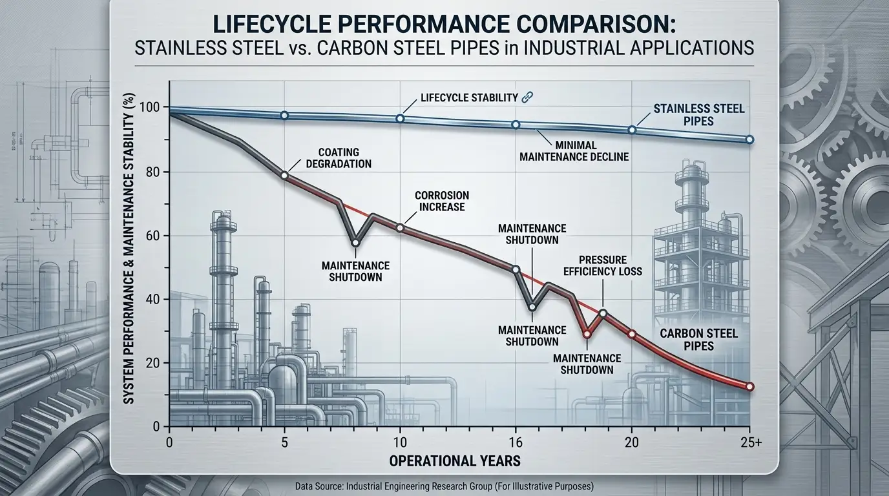

.png)
Industrial piping systems are not selected based on material names, availability, or even upfront pricing alone. In real engineering practice, material selection is a lifecycle decision that determines how a system performs under pressure cycles, corrosion exposure, thermal variation, and long-term operational stress.
At Steel Emporium, we have consistently observed a pattern across industries such as chemical processing, marine engineering, oil & gas, and infrastructure projects: carbon steel systems often perform well initially, but begin to show degradation patterns over time, especially in environments with moisture, chemicals, or fluctuating temperature conditions. Stainless steel, on the other hand, is typically adopted after operational teams experience recurring maintenance cycles or unexpected corrosion-related failures.
This comparison is designed to help engineers and procurement teams understand both materials not from theory alone, but from real industrial behavior and lifecycle performance logic.

1. Why Material Selection Defines the Entire Performance of Industrial Piping Systems
Material selection in piping systems is one of the most important engineering decisions because it determines long-term system reliability, safety margins, and maintenance frequency. A piping network is not a static component; it is a continuously operating system exposed to dynamic internal and external conditions.
From practical experience in industrial supply and application support at Steel Emporium, one of the most overlooked factors is that material degradation does not happen uniformly. Instead, it begins internally, often in microscopic corrosion points or stress zones, long before visible failure occurs.
This is why engineers increasingly prioritize lifecycle behavior rather than just mechanical strength or procurement cost.
How Material Choice Impacts Downtime, Maintenance, and System Stability
Every industrial system is expected to operate continuously without interruption. However, material behavior directly determines how stable that continuity remains over time.
In carbon steel systems, corrosion can gradually reduce internal diameter due to scaling or rust formation, which affects flow rate and increases pressure drop across the system. These changes may not trigger immediate failure but slowly reduce operational efficiency.
Over time, this leads to unplanned shutdowns for inspection, cleaning, or partial replacement. Stainless steel significantly reduces this risk because it does not rely on external coatings that degrade over time, but instead uses a self-protective surface chemistry.
Why Lifecycle Thinking Has Become the Standard in Modern Procurement
Modern procurement decisions in engineering industries have shifted significantly over the past decade. Instead of focusing only on capital expenditure, organizations now evaluate total cost of ownership, which includes maintenance cycles, downtime cost, energy loss, and replacement frequency.
A material that appears economical at installation can become expensive over time if it requires repeated intervention. This is why stainless steel adoption has increased in industries where system downtime is directly linked to financial loss or production inefficiency.
Lifecycle thinking ensures that material selection aligns with operational reliability rather than short-term cost optimization.
How Stainless Steel and Carbon Steel Solve Different Engineering Problems
Stainless steel and carbon steel are not alternative versions of the same solution. They are fundamentally different engineering materials designed for different operating environments.
Carbon steel is optimized for strength and cost efficiency in controlled environments where corrosion exposure is limited or externally managed. Stainless steel is optimized for environments where exposure to moisture, chemicals, or contamination cannot be controlled.
Understanding this distinction is critical because many system failures occur when materials are selected based on cost instead of environmental compatibility.

2. Metallurgical Foundation: Chromium Protection vs High Carbon Strength Behavior
The core difference between stainless steel and carbon steel lies in their chemical composition. Stainless steel contains chromium, typically above 10.5%, which allows it to form a passive oxide layer when exposed to oxygen. This layer is extremely thin but highly effective in preventing corrosion.
Carbon steel lacks this chromium-based protection mechanism. Instead, its high iron content reacts directly with oxygen and moisture, leading to rust formation unless externally protected.
How Chromium Creates a Self-Healing Corrosion Protection Layer
The chromium oxide layer on stainless steel acts as a continuous protective barrier between the metal surface and the surrounding environment. This layer prevents oxygen and moisture from directly reacting with the iron content in the alloy.
What makes this system highly reliable is its self-healing behavior. If the surface is scratched during installation or operation, chromium immediately reacts with oxygen in the environment to reform the protective layer.
This eliminates the need for continuous external coatings or protective maintenance systems, which are typically required in carbon steel installations.
Why Carbon Steel Offers Strength but Requires External Protection
Carbon steel is widely used in structural and high-pressure applications due to its excellent mechanical strength and load-bearing capacity. However, it does not have an inherent corrosion resistance mechanism.
To compensate, industries apply coatings, paints, or galvanization layers. While effective initially, these protective layers degrade due to environmental exposure, mechanical damage, or chemical contact.
Once this protective barrier is compromised, corrosion begins rapidly, requiring maintenance or replacement of affected sections.
How Composition Defines Real-World Service Life Behavior
Material composition directly determines how a system behaves over long-term operation. Stainless steel maintains performance consistency because its protective mechanism is intrinsic to its structure.
Carbon steel, however, depends on external protection systems that require monitoring and maintenance. Over extended periods, this dependency leads to higher operational intervention and variability in performance.
3. ASTM Standards and Industrial Grade Classification
Industrial piping materials are defined not only by composition but also by compliance with standardized specifications such as ASTM and ASME. These standards ensure that materials perform consistently across different manufacturers and project environments.
Stainless Steel Grades: ASTM A312 TP304 and TP316L Applications
ASTM A312 TP304 is commonly used in general industrial applications where moderate corrosion resistance is sufficient. It performs well in water systems, structural piping, and non-aggressive chemical environments.
TP316L, however, contains molybdenum, which enhances resistance to chlorides and pitting corrosion. This makes it suitable for marine environments, desalination plants, and chemical processing systems where exposure conditions are more aggressive.
Carbon Steel Grades: ASTM A106 Grade B and ASTM A53 Applications
ASTM A106 Grade B and ASTM A53 are widely used in oil and gas transportation systems, power plants, and structural piping networks. These grades offer strong mechanical performance and are suitable for high-pressure conditions.
However, their performance is highly dependent on external protection systems when used in corrosive environments.
Why Standard Compliance Matters More Than Material Names
In engineering procurement, material naming alone does not guarantee performance consistency. Standards define chemical composition, mechanical limits, testing procedures, and quality benchmarks.
This ensures that materials sourced from different suppliers behave predictably under identical operating conditions, which is critical for industrial safety and reliability.

4. Mechanical, Thermal, and Operational Performance Comparison
The difference between stainless steel and carbon steel becomes more visible under actual operating conditions involving pressure, temperature fluctuations, and environmental exposure.
Tensile Strength, Yield Strength, and Pressure Handling Behavior
Carbon steel generally exhibits higher tensile strength, making it suitable for heavy-load structural systems and high-pressure applications.
Stainless steel, while slightly lower in raw mechanical strength, provides a more balanced performance profile due to its corrosion resistance. This balance often results in better real-world reliability in corrosive environments.
Temperature Resistance and Stability Under Industrial Conditions
Stainless steel maintains structural stability across a wider range of temperature fluctuations. It performs consistently even under repeated thermal cycling conditions.
Carbon steel performs well under high temperatures but becomes more vulnerable to oxidation when exposed to moisture during thermal fluctuations, which accelerates corrosion.
Corrosion Resistance vs Structural Strength Trade-Off
The key engineering decision between these materials lies in balancing corrosion resistance with mechanical strength. Stainless steel prioritizes durability and environmental stability, while carbon steel prioritizes strength and cost efficiency.
This trade-off forms the foundation of most industrial piping material selection decisions.
5. Hidden Engineering Risks: Galvanic Corrosion and Fabrication Challenges
Beyond standard mechanical properties, there are critical hidden risks that often influence long-term system performance.
How Galvanic Corrosion Occurs in Mixed Metal Systems
When stainless steel and carbon steel are used together in a system and exposed to moisture, an electrochemical reaction can occur. Carbon steel becomes the anode and corrodes at an accelerated rate, while stainless steel may lose part of its passive protection if not properly isolated.
This is why engineers carefully design insulation and separation strategies in mixed-material systems.
Welding and Fabrication Complexity Differences
Stainless steel welding requires controlled shielding environments using inert gases such as argon to prevent oxidation and contamination of the weld zone.
Improper welding can lead to structural weakness and corrosion susceptibility in the heat-affected zone. Carbon steel welding is more flexible and easier to perform in field conditions, but lacks the long-term corrosion protection benefits of stainless systems.
Fabrication and Installation Implications in Real Projects
Fabrication directly impacts project cost, installation speed, and workforce requirements. Stainless steel demands skilled labor and controlled procedures, while carbon steel allows faster installation but increases long-term maintenance dependency.
6. Lifecycle Cost Analysis: CapEx vs OpEx Engineering Model
Lifecycle cost evaluation is one of the most important engineering frameworks in material selection. It considers both initial investment and long-term operational expenditure.
Why Carbon Steel Has Lower Initial Cost but Higher Maintenance Load
Carbon steel is cost-effective during procurement and installation. However, ongoing maintenance requirements such as repainting, corrosion control, and inspection significantly increase lifecycle cost over time.
These recurring interventions also increase operational uncertainty in critical systems.
How Stainless Steel Reduces Lifecycle Cost Through Stability
Stainless steel has a higher initial cost but significantly reduces maintenance frequency and system failure risk. This leads to lower operational expenditure and more predictable system performance over time.
Engineering Decision Matrix for Final Material Selection
At this stage, engineers evaluate environmental exposure, application requirements, maintenance expectations, and lifecycle cost balance before finalizing material selection.
For deeper procurement-level decision frameworks, industries often refer to how to choose the right stainless steel pipes & tubes manufacturer in India, which explains certification standards, testing requirements, and quality assurance processes used in industrial sourcing decisions.
Once technical validation is complete, procurement teams move toward evaluating certified supply options. At this stage, they assess industrial-grade Stainless Steel pipes & tube solutions used in chemical processing, marine systems, oil & gas infrastructure, and high-pressure applications where reliability and corrosion resistance are critical.
7. Real-World Selection Logic: When Each Material Is Used in Industry
Material selection ultimately depends on real operating conditions rather than theoretical advantages.
Carbon steel is preferred in controlled environments where corrosion risk is minimal and cost efficiency is the priority. Stainless steel is preferred in environments where long-term stability, hygiene, and corrosion resistance are essential.
When Carbon Steel Becomes the Right Choice
Carbon steel is commonly used in structural systems, low-corrosion fluid transport, and cost-sensitive projects where external protection systems are feasible and maintained regularly.
When Stainless Steel Becomes the Industrial Standard
Stainless steel is widely used in chemical processing, marine engineering, pharmaceutical manufacturing, food processing, and offshore systems where corrosion resistance and system reliability are critical.
How Engineers Finalize Material Selection in Real Projects
Final selection is based on balancing operational risk, lifecycle cost, environmental exposure, and system criticality. Engineers prioritize reliability and safety over short-term cost savings.
Final Perspective
Stainless steel pipes and tubes are not selected because they are premium materials, but because they consistently deliver predictable performance in demanding industrial environments. Their resistance to corrosion, structural stability, and lifecycle efficiency make them essential in systems where failure is not acceptable. At Steel Emporium, stainless steel piping solutions are widely used across industries where long-term operational reliability, safety, and performance consistency are critical to engineering success.